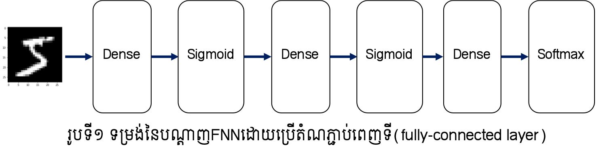
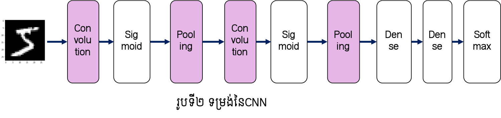
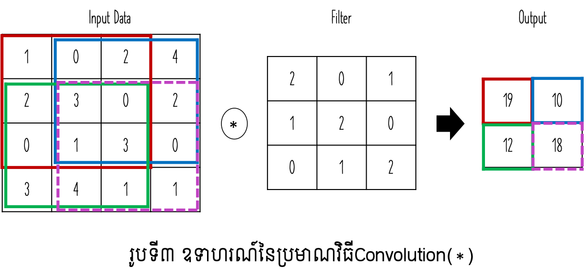
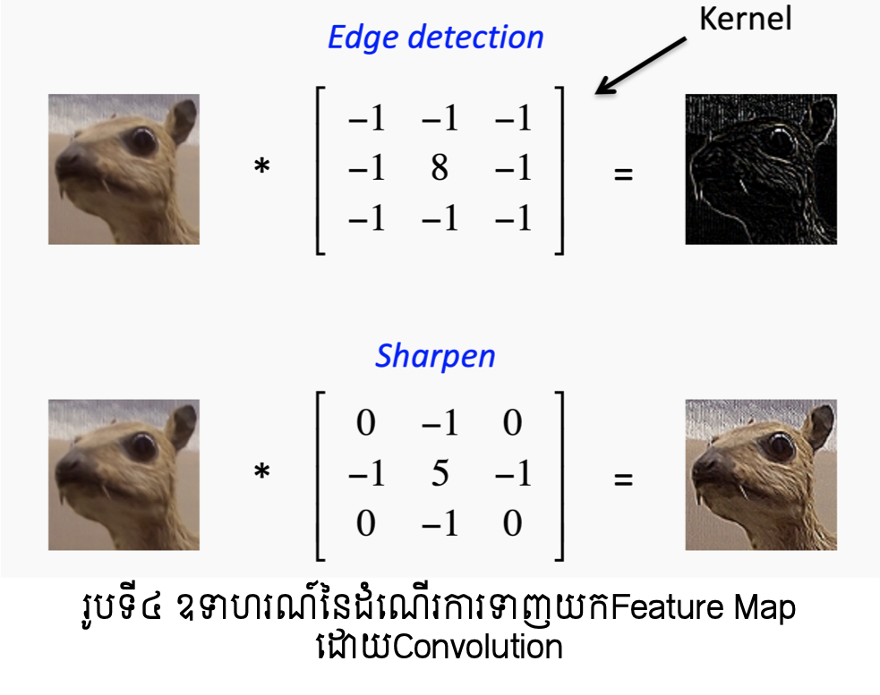
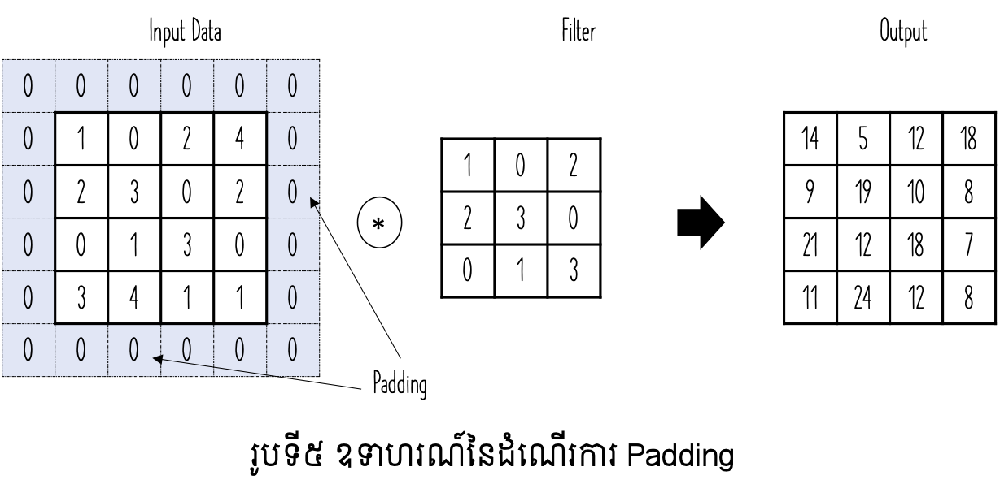
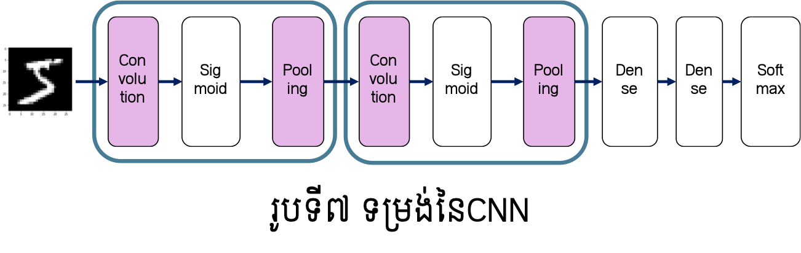
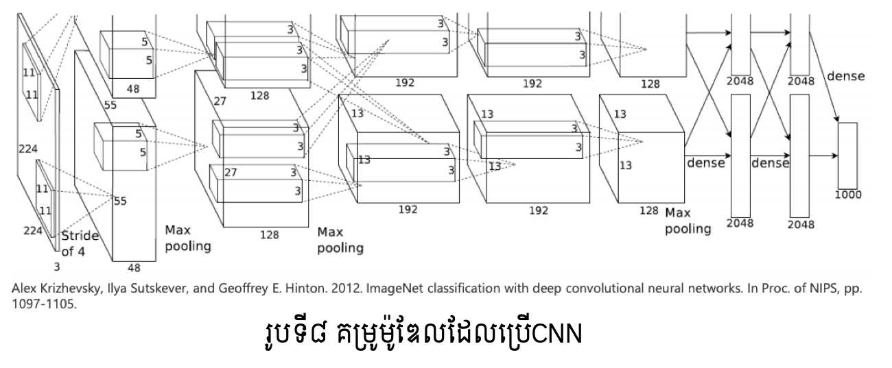

Convolutional Neural Network¶
ក្នុងអត្ថបទនេះ យើងនឹងសិក្សាអំពីប្រភេទមួយផ្សេងទៀតនៃNeural Network ដែលហៅថាConvolutional Neural Network(CNN)។ CNNត្រូវបានប្រើប្រាស់យ៉ាងទូលំទូលាយក្នុងការអនុវត្តលើបច្ចេកវិទ្យាកំណត់សម្គាល់រូបភាពឬកំណត់សម្គាល់សម្លេង និងប្រកបដោយប្រសិទ្ធភាពខ្ពស់បើធៀបនឹងបណ្តាញFNNធម្មតា។ ក្នុងបច្ចេកវិទ្យាកំណត់សម្គាល់រូបភាពឬ បច្ចេកវិទ្យានានាទាក់ទងនឹងការប្រើប្រាស់រូបភាពក្នុងបញ្ញាសិប្បនិម្មិតត្រូវបានមើលឃើញថាមានការប្រើប្រាស់CNNជាមូលដ្ឋាន។ ថ្មីៗនេះទៀត សូម្បីក្នុងបច្ចេកវិទ្យាភាសា(Natural Language Processing) បណ្តាញCNNក៏ត្រូវបានប្រើប្រាស់ផងដែរ។
ទម្រង់និងដំណើរការទូទៅរបស់CNN¶
ដើម្បីស្វែងយល់អំពីCNN ជាដំបូងយើងនឹងពិនិត្យលើទម្រង់ជាទូទៅរបស់វាជាមុន។ CNNក៏ ដូចជាបណ្តាញNeural Network ដទៃដែរគឺកើតឡើងពីការផ្គុំបញ្ចូលគ្នានូវថ្នាក់ណឺរ៉ូនជាច្រើនថ្នាក់។ ប៉ុន្តែចំណុចពិសេសគឺនៅក្នុងCNN មានថ្នាក់ពិសេសពីរដែលមិនមាននៅក្នុងFeedforward Neural Network(FNN) ដែលយើងសិក្សាកន្លងមក គឺ ថ្នាក់Convolution និង ថ្នាក់ Pooling។ យើងនឹងសិក្សាលម្អិតអំពីថ្នាក់ទាំងពីរនេះនៅចំណុចបន្ទាប់។
ក្នុងបណ្តាញFNN ណឺរ៉ូននៃថ្នាក់ដែលនៅជាប់គ្នាត្រូវបានភ្ជាប់គ្នាទាំងអស់ដោយទម្ងន់ផ្ទាល់របស់វា។ ទម្រង់បែបនេះគេហៅថា តំណភ្ជាប់ពេញទី(fully-connected)។ ក្នុងរូបនិងការបកស្រាយខាងក្រោម យើងនឹងបង្ហាញតំណភ្ជាប់ពេញទីបែបនោះដោយ Dense រីឯអនុគមន៍សកម្មនឹងបង្ហាញដោយឈ្មោះនៃអនុគមន៍នោះ។ ក្នុងករណីនេះ ទម្រង់នៃបណ្តាញFNNអាចបង្ហាញបានដូចរូបទី១។ បណ្តាញFNNអាចត្រូវបាននិយាយថាជាបណ្តុំនៃតំណភ្ជាប់ពេញទីនិងអនុគមន៍សកម្មច្រើនថ្នាក់បន្តគ្នា។ ផ្ទុយពីនេះ ទម្រង់នៃបណ្តាញCNNអាចបង្ហាញបានដូចរូបទី២។ ដូចដែលអ្នកបានឃើញថ្នាក់ថ្មី (Convolution និង Pooling)ត្រូវបានប្រើជាបន្តបន្ទាប់ មុនពេលដែលបណ្តុំនៃតំណភ្ជាប់ពេញទីនិងអនុគមន៍សកម្មត្រូវបានអនុវត្ត។ ទម្រង់ដែលថ្នាក់ Convolution និង Pooling ត្រូវបានប្រើមុនត្រូវបានមើលឃើញជាទូទៅក្នុងបណ្តាញCNN។


អំពីថ្នាក់ Convolution¶
ជាដំបូងយើងនឹងពិនិត្យលើភាពខុសគ្នារវាងថ្នាក់តំណភ្ជាប់ពេញទី(fully-connected)ដែល ត្រូវបានប្រើក្នុងFNNនិងថ្នាក់Convolutionនេះ។
បញ្ហានៃថ្នាក់តំណភ្ជាប់ពេញទី¶
នៅក្នុងបណ្តាញFNNណឺរ៉ូននៃថ្នាក់តំណភ្ជាប់ពេញទីត្រូវបានភ្ជាប់គ្នាគ្រប់ណឺរ៉ូនទាំងអស់ដែលមាននៅថ្នាក់ជាប់គ្នា រីឯចំនួននៃណឺរ៉ូននៅថ្នាក់លទ្ធផលអាចត្រូវបានកំណត់ដោយសេរី។
បញ្ហានៃថ្នាក់តំណភ្ជាប់ពេញទីគឺ ទម្រង់នៃទិន្នន័យមិនត្រូវបានប្រើប្រាស់ឱ្យសមស្របនោះឡើយ។ ឧទាហរណ៍បើធាតុចូលជារូបថតដូចរូបទី១និងទី២ នោះធាតុចូលស្ថិតនៅក្នុងទម្រង់វិមាត្រ៣ពោល គឺ បណ្តោយ ទទឹង និង channel(RGB)។ បើធាតុចូលនេះ ត្រូវបានបញ្ជូនទៅក្នុងFNNដែលមានថ្នាក់តំណភ្ជាប់ពេញទី នោះដូចដែលបានបង្ហាញនៅឧទាហរណ៍នៃមេរៀនអំពីFNN ទិន្នន័យនេះត្រូវបានពន្លាតជា១វិមាត្រដោយតម្រៀបគ្រប់តម្លៃនៃPixelទាំងអស់ជាកំប៉ូសង់នៃវ៉ិចទ័រ១វិមាត្រនោះ។ក្នុងឧទាហរណ៍ដែលយើងបានសិក្សាកន្លងមក រូបថតដែលមានទម្រង់(28,28,1) ត្រូវបានប្រើជាវ៉ិចទ័រ១វិមាត្រដែលមានកំប៉ូសង់ចំនួន784(=28x28x1)។ ហេតុនេះការប្រើប្រាស់ថ្នាក់តំណភ្ជាប់ពេញទីធ្វើឱ្យខាតបង់ព័ត៌មានដែលយើងអាចទាញយកពីទម្រង់ដើមនៃទិន្នន័យដូចជាទិន្នន័យអំពីចម្ងាយនៃរបស់ក្នុងរូបដែលបង្ហាញដោយទម្រង់ RGB ច្រើនchannelជាដើម។
ផ្ទុយពីនេះ ថ្នាក់Convolution ទទួលយកធាតុចូលដោយរក្សាទម្រង់ដើមនៃទិន្នន័យ។ ក្នុងករណីរូបថតទម្រង់៣វិមាត្រដូចពណ៌នាខាងលើ ថ្នាក់Convolutionនឹងទទួលយករូបថតវិមាត្រ៣នោះជាធាតុចូលនិងបញ្ចេញរូបថតវិមាត្រ៣ជាលទ្ធផល។ ហេតុនេះ CNN អាចមានលទ្ធភាពក្នុងការសិក្សាបានស៊ីជម្រៅលើលក្ខណៈពិសេសរបស់ទិន្នន័យបាន។ នៅក្នុងCNN ធាតុចូលនៃថ្នាក់Convolutionហៅថា ផែនទីលក្ខណៈចូល(input feature map) និងធាតុចេញ(លទ្ធផល)របស់វាហៅថាផែនទីលក្ខណៈចេញ(output feature map)។ ក្នុងករណីខ្លះយើងហៅជារួមថា feature map។
ប្រមាណវិធី Convolution¶
ក្នុងថ្នាក់Convolution ប្រមាណវិធីConvolutionត្រូវបានអនុវត្ត។ ប្រមាណវិធីនេះអាចប្រៀប បានជាដំណើរការនៃFilterនៅក្នុងបច្ចេកវិទ្យារូបភាព(Image Processing)។ ការធ្វើប្រមាណវិធីConvolution លើរូបភាពដែលមានទំហំ \(W\times W\)និងFilter ដែលមានទំហំ\(H\times H\) គឺកំណត់ដោយទម្រង់ខាងក្រោម។ \(u_{ij}\) ជាតម្លៃលទ្ធផលនៅទីតាំង\(\left(i,j\right)\) និង \(x_{st}\) ជាតម្លៃនៅPixel \(\left(s,t\right)\) និង \(h_{pq}\) ជាតម្លៃFilterនៃទីតាំង \(\left(p,q\right)\)។

រូបទី៣បង្ហាញពីឧទាហរណ៍នៃប្រមាណវិធីConvolution។ ឧបមាថាទិន្នន័យជាធាតុចូលមានទម្រង់២វិមាត្រ(height, width) ដែលមានទំហំ\(\left(4,4\right)\) និង Filterមានទំហំ\(\left(3,3\right)\)នោះលទ្ធផលធាតុចេញមានទំហំ\(\left(2,2\right)\)។ របៀបនៃការគណនាគឺ ចន្លោះនៃទិន្នន័យដែលមានទំហំដូចFilterត្រូវបានគណនាដោយធ្វើផលគុណគ្រប់ធាតុដែលមានទីតាំងត្រូវគ្នារួចធ្វើប្រមាណវិធីបូកបញ្ចូលគ្នា។ ឧទាហរណ៍នៅក្នុងចន្លោះពណ៌ក្រហម និងពណ៌បៃតងការគណនាត្រូវបានអនុវត្តដូចខាងក្រោម។
ដំណើរការConvolution នេះអាចទាញយកនូវលក្ខណៈឬទម្រង់ជាក់លាក់ដែលមាននៅទីតាំងផ្សេងៗនៃរូបភាពបានតាមការកំណត់Filterសមស្រប។ រូបទី៤បង្ហាញពីឧទាហរណ៍នៃលក្ខណៈនោះ។

(Image from: Simple Introduction to Convolutional Neural Networks https://towardsdatascience.com/simple-introduction-to-convolutional-neural-networks-cdf8d3077bac )
ការតម្រឹម Padding¶
ដូចដែលបានបង្ហាញខាងលើ តាមរយៈប្រមាណវិធីConvolution ទំហំនៃលទ្ធផលដែល ទទួលបានមានទំហំតូចជាធាតុចូលដើមជានិច្ច។ ទំហំនៃលទ្ធផលនោះកំណត់ដោយទម្រង់ខាងក្រោម។ នៅទីនេះ \(\left\lfloor x\right\rfloor\) ជាតម្លៃចំនួនគត់ធំបំផុតដែលតូចជាង \(x\)។
ប៉ុន្តែក្នុងដំណើរការវិភាគទិន្នន័យ នៅដំណាក់កាលខ្លះការរក្សាទំហំនៃធាតុចូលនិងលទ្ធផលឱ្យដូចគ្នាជារឿងចាំបាច់។ ក្នុងករណីនេះដំណើរការនៃតម្រឹម(Padding) ត្រូវបានប្រើ។ ដំណើរការនេះគឺបន្ថែមតម្លៃនៅផ្នែកជាយជុំវិញនៃរូបភាពដោយតម្លៃសូន្យ។ រូបទី៥បង្ហាញពីគម្រូដំណើរការនេះ។

ប្រមាណវិធីរំកិល Sride¶
ក្នុងការគណនាខាងលើ តំបន់ដែលប្រើដើម្បីអនុវត្តFilterត្រូវបានរំកិលម្តង១ៗពីឆ្វេងទៅស្តាំ និងពីលើចុះក្រោម។ ចន្លោះឬទំហំដែលត្រូវប្រើក្នុងដំណើរការរំកិលតំបន់ដើម្បីអនុវត្តFilter នេះហៅថា Sride។ ក្នុងករណីសាមញ្ញខាងលើ តម្លៃនៃ Sride ត្រូវបានកំណត់ដោយ 1 ។ ជាទូទៅក្នុងករណីដែល តម្លៃ Srideគឺ s លទ្ធផលនៃConvolution ត្រូវបានកំណត់ដោយទម្រង់ខាងក្រោម។
ក្នុងករណីដែលប្រើ Padding ជាមួយផង លទ្ធផលនឹងផ្តល់ឱ្យដោយទំហំខាងក្រោម។
ថ្នាក់ Pooling¶
ក្នុងថ្នាក់Pooling ប្រមាណវិធីដែលអនុវត្តគឺការបង្រួមទំហំនៃទិន្នន័យឱ្យរួមតូចជាងមុនដោយ កំណត់យកតម្លៃតំណាងនៅក្នុងតំបន់។ ជាទូទៅថ្នាក់Pooling មានពីរផ្អែកលើប្រភេទនៃតម្លៃតំណាងដែលកំណត់យក ពោលគឺ តម្លៃអតិបរមាក្នុងតំបន់ និងតម្លៃមធ្យមក្នុងតំបន់។ ក្នុងករណីតម្លៃអតិបរមាត្រូវបានប្រើប្រាស់ត្រូវបានហៅថា Max Pooling ឯករណីតម្លៃមធ្យមត្រូវបានប្រើហៅថា Average Pooling។ លក្ខណៈពិសេសនៅដំណាក់កាលនេះគឺ គ្មានប៉ារ៉ាម៉ែត្រដែលត្រូវរៀន។

ទម្រង់នៃបណ្តាញCNNនិងការរៀន(Learning)¶
ដូចបង្ហាញខាងដើម CNN ត្រូវបានប្រើច្រើនក្នុងបច្ចេកវិទ្យារូបភាព។ ទម្រង់នៃបណ្តាញនេះ ច្រើនកំណត់ដោយទម្រង់ដូចរូបទី៧ ដោយប្រើថ្នាក់ដែលកើតពីConvolutionនិងPoolingច្រើនដងនិងប្រើថ្នាក់ដែលកើតពីតំណភ្ជាប់ពេញទីចុងក្រោយ។ ចំពោះចំណោទធ្វើចំណាត់ថ្នាក់រូបភាពច្រើនក្រុម យើងអាចបកស្រាយបានថា ថ្នាក់ដែលប្រើConvolutionនិងPooling ជាថ្នាក់ដែលទាញយកលក្ខណៈសម្គាល់ពិសេស(feature map)ពីរូបភាព រីឯថ្នាក់កើតពីតំណភ្ជាប់(Dense)ត្រូវបានប្រើដើម្បីធ្វើចំណាត់ថ្នាក់ក្រុមដូចក្នុងFNNដែរ។
ដូចដែលអ្នកអាចធ្វើការកត់សម្គាល់បាន ថ្នាក់និមួយៗនៃCNNត្រូវបានតភ្ជាប់គ្នាជាបន្តបន្ទាប់ប្រៀបដូចជាថ្នាក់នៃFNNដែរ។ ហេតុនេះការកំណត់តម្លៃប៉ារ៉ាម៉ែត្រនៃថ្នាក់និមួយៗ(ដំណើរការរៀន)អាចធ្វើបានដោយប្រើ Backpropagation Algorithmដូចក្នុងករណីFNNផងដែរ។ អ្នកអាចប្រើប្រាស់FrameWork ដែលផ្តល់ឱ្យប្រើជាសេរីជាច្រើនដើម្បីបង្កើតម៉ូឌែលCNNបានដូចជា Keras, PyTorch, Tensorflow ជាដើម។
អនុវត្តន៍នៃបណ្តាញCNN¶
CNNត្រូវបានអភិវឌ្ឍជាបណ្តាញធំនិងស្មុគស្មាញដើម្បីដោះស្រាយបញ្ហានានាពិសេសក្នុង បច្ចេកវិទ្យាធ្វើកំណត់សម្គាល់វត្ថុក្នុងរូបភាព។ រូបទី៨បង្ហាញពីគម្រូនៃម៉ូឌែលដែលប្រើCNNដើម្បីធ្វើចំណាត់ថ្នាក់1000ក្រុមនៃវត្ថុក្នុងរូបភាពដែលត្រូវបានស្គាល់ថាផ្តល់នូវលទ្ធផលល្អប្រសើរខ្លាំង។ សម្រាប់ចំណេះដឹងបន្ថែមទាក់ទងនឹងការប្រកួតប្រជែងបង្កើតម៉ូឌែលសម្រាប់ធ្វើចំណាត់ថ្នាក់ក្រុមវត្ថុក្នុងរូបភាព មិត្តអ្នកអានអាចចូលទៅកាន់តំណភ្ជាប់ខាងក្រោម។
http://www.image-net.org/challenges/LSVRC/
